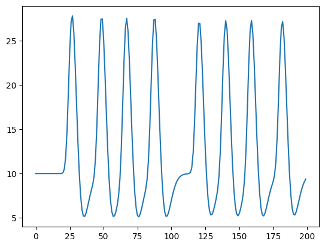
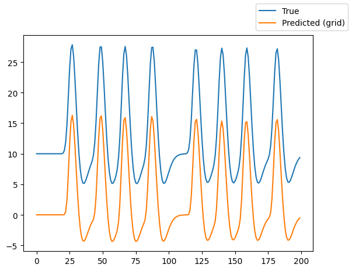
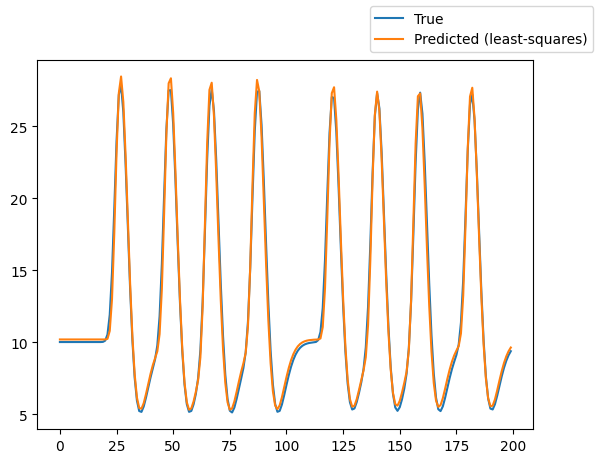
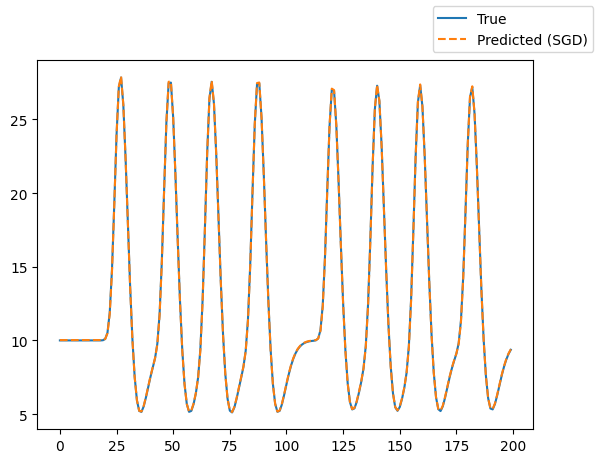

Getting started¶
This page gives a brief overview on how to fit a population receptive field (pRF) model to simulated data.
A pRF model maps neural activity in a region of interest in the brain (e.g., V1 in the human visual cortex) to an experimental stimulus (e.g., a bar moving through the visual field). Here, we use the visual domain as an example, where the part of the visual field that stimulates activity in the region of interest is the pRF.
Defining the stimulus¶
Let’s start with the first step: Defining the stimulus. We load an example stimulus that is included in the package. The stimulus simulates a bar moving in different directions through a two-dimensional visual field.
from prfmodel.examples import load_2d_prf_bar_stimulus
num_frames = 200 # Simulate 200 time frames
stimulus = load_2d_prf_bar_stimulus()
print(stimulus)
PRFStimulus(design=array[200, 101, 101], grid=array[101, 101, 2], dimension_labels=['y', 'x'])
WARNING: All log messages before absl::InitializeLog() is called are written to STDERR
I0000 00:00:1778667326.752760 4061 cudart_stub.cc:31] Could not find cuda drivers on your machine, GPU will not be used.
I0000 00:00:1778667326.796370 4061 cpu_feature_guard.cc:227] This TensorFlow binary is optimized to use available CPU instructions in performance-critical operations.
To enable the following instructions: AVX2 FMA, in other operations, rebuild TensorFlow with the appropriate compiler flags.
WARNING: All log messages before absl::InitializeLog() is called are written to STDERR
I0000 00:00:1778667328.185925 4061 cudart_stub.cc:31] Could not find cuda drivers on your machine, GPU will not be used.
When printing the stimulus object, we can see that it has three attributes. The design attribute defines how
the visual field changes over time. It has shape (num_frames, width, height), where width and hight define the number of pixels at which the visual field is recorded.
The grid attribute maps each pixel to its xy-coordinate in the visual field (i.e., the degree of visual angle).
Defining the pRF model¶
Now that we defined our stimulus, we can create a pRF model to predict a neural response to this stimulus in our (hypothetical) region of interest (e.g., V1). We use the most popular pRF model that is based on the seminal paper by Dumoulin and Wandell (2008).
The Gaussian2DPRFModel class performs all these steps to make a combined prediction.
from prfmodel.models import Gaussian2DPRFModel
prf_model = Gaussian2DPRFModel()
To simulate a neural response to our stimulus with our Gaussian 2D pRF model, we need to define a set of parameters.
The list of parameters that need to be set to make model predictions can be obtained from the parameter_names property.
prf_model.parameter_names
['mu_y',
'mu_x',
'sigma',
'delay',
'dispersion',
'undershoot',
'u_dispersion',
'ratio',
'weight_deriv',
'baseline',
'amplitude']
The parameters mu_x, mu_y, and sigma define the location and size of the predicted Gaussian pRF and are of primary interest.
We simulate a pRF with its center at (-2.1, 1.45) and a size of 1.35. The parameters
delay, dispersion, undershoot, u_dispersion, ratio, and weight_deriv determine the impulse response that is
convolved with our pRF response. The parameters baseline and amplitude shift and scale our convolved
response, respectively. We store the parameter values in a pandas.DataFrame object.
import pandas as pd
true_params = pd.DataFrame(
{
"mu_x": [-2.1],
"mu_y": [1.45],
"sigma": [1.35],
"delay": [6.0],
"dispersion": [0.9],
"undershoot": [12.0],
"u_dispersion": [0.9],
"ratio": [0.48],
"weight_deriv": [-0.5],
"baseline": [10.0],
"amplitude": [1.2],
},
)
Using the “true” parameters, we simulate a response to our stimulus by making a prediction with our pRF model.
import matplotlib.pyplot as plt
simulated_response = prf_model(stimulus, true_params)
_ = plt.plot(simulated_response[0])
E0000 00:00:1778667329.464237 4061 cuda_platform.cc:52] failed call to cuInit: INTERNAL: CUDA error: Failed call to cuInit: UNKNOWN ERROR (303)

The predicted response contains increased activation followed by decreased activation compared to the baseline activity for each moving bar in our stimulus.
Fitting the pRF model¶
We will fit the pRF model to our simulated data using multiple stages. We begin with a grid search to find good
starting values for our parameters of interest (mu_x, mu_y, and sigma). Then, we use least squares to estimate the baseline and amplitude of
our model. Finally, we use stochastic gradient descent (SGD) to finetune our model fits.
Let’s start with the grid search by defining ranges of mu_x, mu_y, and sigma that we want to construct a grid
of parameter values from. For all other parameters, we only provide a single value so that they will stay constant
across the entire grid.
import numpy as np
param_ranges = {
"mu_x": np.linspace(-3.0, 3.0, 10),
"mu_y": np.linspace(-3.0, 3.0, 10),
"sigma": np.linspace(0.5, 3.0, 10),
"delay": [6.0],
"dispersion": [0.9],
"undershoot": [12.0],
"u_dispersion": [0.9],
"ratio": [0.48],
"weight_deriv": [-0.5],
"baseline": [0.0],
"amplitude": [1.0],
}
For all three parameters, we defined ranges of 10 values that will be used to construct the grid. That is, the grid search will evaluate all possible combinations of these values and return the combination that fits the simulated data best. This will result in a grid containing \(10 \times 10 \times 10 = 1000\) parameter combinations.
Let’s construct the GridFitter and perform the grid search. Note that we set chunk_size=20 to let the GridFitter
evaluate 20 parameter combinations at the same time (which saves us some memory).
from prfmodel.fitters import GridFitter
grid_fitter = GridFitter(
model=prf_model,
stimulus=stimulus,
)
grid_history, grid_params = grid_fitter.fit(
data=simulated_response,
parameter_values=param_ranges,
batch_size=20,
)
grid_params
| mu_x | mu_y | sigma | delay | dispersion | undershoot | u_dispersion | ratio | weight_deriv | baseline | amplitude | |
|---|---|---|---|---|---|---|---|---|---|---|---|
| 0 | -2.333333 | 1.666667 | 0.5 | 6.0 | 0.9 | 12.0 | 0.9 | 0.48 | -0.5 | 0.0 | 1.0 |
We can see that the estimates for mu_x, mu_y, and sigma are one combination in our grid. However, because the
grid did not contain the “true” parameters we used to simulate the original response, the estimates differ from the
“true” parameters.
Using the parameter estimates resulting from the grid search we can make model predictions and compare them against the original simulated response.
grid_pred_response = prf_model(stimulus, grid_params)
fig, ax = plt.subplots()
ax.plot(simulated_response[0], label="True")
ax.plot(grid_pred_response[0], label="Predicted (grid)")
fig.legend();

We can see that the predicted response follows the shape of the original (true) response but still shows some deviation in the amplitude of the activation peaks and the baseline activation.
Using least squares, we can estimate the baseline and amplitude parameters of our model.
from prfmodel.fitters import LeastSquaresFitter
ls_fitter = LeastSquaresFitter(
model=prf_model,
stimulus=stimulus,
)
ls_history, ls_params = ls_fitter.fit(
data=simulated_response,
parameters=grid_params,
slope_name="amplitude", # Names of parameters to be optimized with least squares
intercept_name="baseline",
)
ls_params
| mu_x | mu_y | sigma | delay | dispersion | undershoot | u_dispersion | ratio | weight_deriv | baseline | amplitude | |
|---|---|---|---|---|---|---|---|---|---|---|---|
| 0 | -2.333333 | 1.666667 | 0.5 | 6.0 | 0.9 | 12.0 | 0.9 | 0.48 | -0.5 | 10.179467 | 1.120465 |
Looking at the parameters, we can see that the model compensates the deviation in the peaks by adjusting the
baseline and amplitude parameters. We can also plot the predicted response.
ls_pred_response = prf_model(stimulus, ls_params)
fig, ax = plt.subplots()
ax.plot(simulated_response[0], label="True")
ax.plot(ls_pred_response[0], label="Predicted (least-squares)")
fig.legend();

To finetune our model fits, we use SGD to iteratively optimize model parameters using the gradient of a loss function that is computed between data and model predictions. The default loss function in prfmodel is the means squared error. As initial parameters, we use the result from the grid search and least squares fit. We fix the parameters related to the impulse response to their initial values (which are the “true” values).
from prfmodel.fitters import SGDFitter
sgd_fitter = SGDFitter(
model=prf_model,
stimulus=stimulus,
)
sgd_history, sgd_params = sgd_fitter.fit(
data=simulated_response,
init_parameters=ls_params,
fixed_parameters=["delay", "dispersion", "undershoot", "u_dispersion", "ratio", "weight_deriv"],
)
sgd_params
| mu_x | mu_y | sigma | delay | dispersion | undershoot | u_dispersion | ratio | weight_deriv | baseline | amplitude | |
|---|---|---|---|---|---|---|---|---|---|---|---|
| 0 | -2.098601 | 1.448046 | 1.270513 | 6.0 | 0.9 | 12.0 | 0.9 | 0.48 | -0.5 | 10.022607 | 1.189903 |
We can plot the predicted model response and see that it matches the original simulated response almost perfectly.
sgd_pred_response = prf_model(stimulus, sgd_params)
fig, ax = plt.subplots()
ax.plot(simulated_response[0], label="True")
ax.plot(sgd_pred_response[0], "--", label="Predicted (SGD)")
fig.legend();

References¶
Dumoulin, S. O., & Wandell, B. A. (2008). Population receptive field estimates in human visual cortex. NeuroImage, 39(2), 647–660. https://doi.org/10.1016/j.neuroimage.2007.09.034